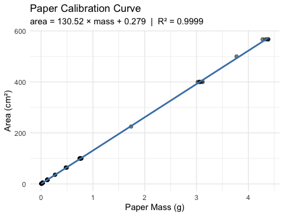
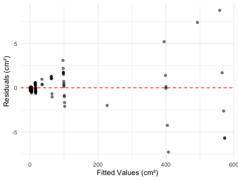
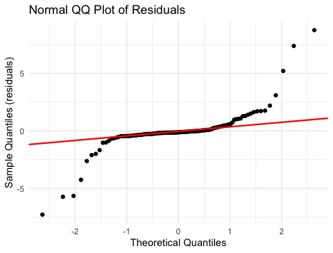

# Load packages at the top of the script ---------------
library(readxl) # reading Excel files
library(tidyverse) # data manipulation + ggplot2
library(skimr) # fast data overviewLecture 05 — Linear Regression
Predicting leaf area from paper tracing mass (Whitlock & Schluter Ch. 17)
Where we left off (Lecture 04)
- Welch’s two-sample t-test — compared mean leaf weight between sunny and shady sides (
var.equal = FALSE, two-tailed) - Five-step framework — hypotheses → normality → variance → run test → report
- Normality: histogram, QQ plot, Shapiro-Wilk on each group
- Variance: Levene’s test; Welch’s is safe regardless of the result
- Reading
t.test()output — t-statistic, Welch-Satterthwaite df, p-value, 95% CI, group means - Result — shady leaves were significantly heavier than sunny leaves (Welch’s t-test, p < 0.001)
Note
✅ Transition
We confirmed that shady and sunny leaves differ in weight. Today we go further — we build a calibration curve to convert that weight into a more biologically meaningful measurement: leaf surface area (cm²).
Goals for Today
- Understand what linear regression does and when to use it
- Learn the equation: \(\hat{Y} = a + bX\)
- slope b, intercept a, residuals, R²
- Understand least squares — what the line minimizes
- Fit a model in R with
lm()and read every line ofsummary() - Apply it: build a calibration curve to predict leaf area from paper tracing mass
- Check all four assumptions of regression
- Use
predict()to make predictions with intervals - Use
mutate()to add model results to a data frame
Tip
🖐 Try it yourself
By the end you will predict leaf area from a tracing weight.
Tools today:
readxl,tidyverse
Textbook:
- 📖 Whitlock & Schluter Analysis of Biological Data 2nd ed.
- Chapter 17 — Regression (pp. 539–575)
- §17.1 Linear regression
- §17.3 Testing slope hypotheses
- §17.4 R²
- §17.5 Assumptions
Naming conventions:
- models →
_model - plots →
_plot
Our Calibration Idea
The problem: measuring leaf surface area without a leaf area meter.
The solution — a calibration curve:
- Cut paper squares of known area (1, 4, 16 … 567 cm²)
- Weigh each square on a precision balance
- Fit a regression line: area ~ mass
- Trace a leaf on the same paper, weigh the tracing
- Plug the tracing mass into the equation → predicted leaf area
Why does this work?
Paper of uniform stock has constant area density (cm² per gram). Mass and area are therefore perfectly linearly related within a sheet.
| Known area (cm²) | n replicates |
|---|---|
| 1 | 25 |
| 4 | 32 |
| 16 | 24 |
| 36 | 3 |
| 64 | 7 |
| 100 | 14 |
| 225–567 | 12 |
Total: 118 paper squares weighed
📖 W&S §17.1, Example 17.1 (the same logic: measure X to predict Y)
What Is Linear Regression?
Linear regression draws the best straight line through a scatter of points to predict a response variable (Y) from an explanatory variable (X).
Two key roles:
| Role | Variable | Our example |
|---|---|---|
| Explanatory (X) | on the x-axis; what you measure | mass_g |
| Response (Y) | on the y-axis; what you want to predict | area_cm2 |
X is often something easy to measure; Y is what you actually want to know. Regression gives you the equation to convert X → Y.
📖 W&S §17.1 p. 540–541
When to use regression:
- You have two numeric variables
- One variable can reasonably predict or cause the other
- You want an equation to make predictions for new observations
Regression vs. our t-test (Lecture 04):
| Test | Question |
|---|---|
| t-test | Do two group means differ? |
| Regression | Does X predict Y numerically? |
Regression produces a predictive equation. The t-test produces a decision about group means.
The Regression Equation
Population model (W&S §17.1):
\[Y = \alpha + \beta X + \varepsilon\]
Sample estimate (what R calculates):
\[\hat{Y} = a + bX\]
| Symbol | Name | Meaning |
|---|---|---|
| \(\hat{Y}\) | predicted Y | estimated mean area at a given mass |
| a | intercept | predicted Y when X = 0 |
| b | slope | change in Y per 1-unit increase in X |
| \(\varepsilon\) | residual | observed − predicted |
Our equation will be: \[\widehat{\text{area}} = a + b \times \text{mass\_g}\]
Interpreting the slope:
b = the change in area (cm²) for every additional 1 gram of paper
Since 1 g ≈ 130 cm² of paper, the slope is the area density of the paper stock.
Interpreting the intercept:
a = predicted area when mass = 0
Physically this should be 0 (no paper, no area). Small non-zero values reflect measurement error.
📖 W&S §17.1 pp. 543–545
Residuals and Least Squares
Residual for observation i:
\[e_i = Y_i - \hat{Y}_i = \text{observed} - \text{predicted}\]
The least-squares line minimizes the sum of squared residuals:
\[\text{minimize} \sum_{i=1}^{n}(Y_i - \hat{Y}_i)^2\]
Squaring serves two purposes: - Makes all deviations positive (no cancellation) - Penalizes large deviations more than small ones
There is only one line that achieves this minimum — it is unique.
📖 W&S §17.1 p. 542 (Figure 17.1-2)
Visual intuition:
Each data point has a vertical residual — the distance from the point to the regression line.
observed Y │ ● ← residual (positive)
│ \
predicted Ŷ│-----●--- regression line
│
└──────────── XA point above the line has a positive residual. A point below has a negative residual. The sum of all residuals = 0.
R² — How Much Does X Explain?
\[R^2 = \frac{SS_\text{regression}}{SS_\text{total}} = 1 - \frac{SS_\text{residual}}{SS_\text{total}}\]
- SS_total = total variation in Y around its mean
- SS_regression = variation explained by X
- SS_residual = variation not explained (scatter around the line)
R² ranges from 0 to 1:
| R² | Interpretation |
|---|---|
| 1.00 | X explains all variation in Y |
| 0.85 | X explains 85% of variation |
| 0.00 | X explains nothing |
📖 W&S §17.4 p. 555
Our calibration data:
Because paper has uniform density, mass and area are nearly perfectly linearly related.
We expect R² ≈ 1.00.
Important: R² tells you how well the line fits the data you have. It does not by itself tell you whether the relationship is statistically significant — that requires a test of the slope.
A significant slope with a low R² is possible (weak but real relationship). In biology, R² values of 0.3–0.7 are common and meaningful.
Assumptions of Regression
Four assumptions must hold for the p-value and confidence intervals to be valid (W&S §17.5):
| # | Assumption | How to check |
|---|---|---|
| 1 | Linearity — Y changes linearly with X | Residual vs. fitted plot |
| 2 | Independence — observations are independent | Study design |
| 3 | Equal variance — spread of residuals is constant | Residual vs. fitted plot |
| 4 | Normality — residuals are normally distributed | QQ plot + Shapiro-Wilk |
Important
Check residuals, not raw data.
The normality assumption is about the residuals (observed − predicted), not the original Y values.
A well-fitted residual plot looks like a random horizontal cloud of points centered at zero — no curves, no funnel shapes.
📖 W&S §17.5 pp. 557–560 (Figures 17.5-1, 17.5-4)
Load Libraries and Data
# Load the paper calibration data ----------------------
paper_df <- read_excel("data/paper_area_weights.xlsx")
Note
The file paper_area_weights.xlsx contains 118 paper squares of known area (1–567 cm²) with their measured masses. This is the calibration dataset we use to predict leaf area from a tracing weight.
Inspect the Data
# Quick overview of the calibration data ---------------
skim(paper_df)| Name | paper_df |
| Number of rows | 118 |
| Number of columns | 2 |
| _______________________ | |
| Column type frequency: | |
| numeric | 2 |
| ________________________ | |
| Group variables | None |
Variable type: numeric
| skim_variable | n_missing | complete_rate | mean | sd | p0 | p25 | p50 | p75 | p100 | hist |
|---|---|---|---|---|---|---|---|---|---|---|
| area_cm2 | 0 | 1 | 71.64 | 144.46 | 1 | 4.00 | 16.00 | 64.00 | 567.00 | ▇▁▁▁▁ |
| mass_g | 0 | 1 | 0.55 | 1.11 | 0 | 0.03 | 0.12 | 0.48 | 4.39 | ▇▁▁▁▁ |
# How many squares per area group? --------------------
paper_df %>%
group_by(area_cm2) %>%
summarize(
n = n(),
mean_wt = round(mean(mass_g), 5)
)# A tibble: 10 × 3
area_cm2 n mean_wt
<dbl> <int> <dbl>
1 1 25 0.00677
2 4 32 0.0299
3 16 24 0.121
4 36 3 0.269
5 64 7 0.484
6 100 14 0.760
7 225 1 1.74
8 400 6 3.07
9 500 1 3.77
10 567 5 4.35 First Plot — Scatter
# Scatter plot of area vs mass to check linearity -----
scatter_05_plot <- paper_df %>%
ggplot(aes(x = mass_g, y = area_cm2)) +
geom_point(alpha = 0.5, size = 2) +
labs(
title = "Paper Mass vs. Known Area",
x = "Mass (g)",
y = "Area (cm²)"
) +
theme_minimal()
scatter_05_plot
What to look for before fitting:
- Is the relationship linear? → points should follow a straight line
- Is the variance constant? → spread around the trend should look similar at all X values
- Any obvious outliers?
Both variables are continuous and numeric → linear regression is appropriate.
📖 W&S §17.1 p. 541
Fit the Model with lm()
# Fit the least-squares regression line ---------------
# formula: response ~ predictor
paper_lm_model <- lm(area_cm2 ~ mass_g, data = paper_df)# Full model summary — every number matters -----------
summary(paper_lm_model)
Call:
lm(formula = area_cm2 ~ mass_g, data = paper_df)
Residuals:
Min 1Q Median 3Q Max
-7.2774 -0.3059 -0.1221 0.2264 8.7592
Coefficients:
Estimate Std. Error t value Pr(>|t|)
(Intercept) 0.2792 0.1812 1.541 0.126
mass_g 130.5234 0.1473 885.964 <2e-16 ***
---
Signif. codes: 0 '***' 0.001 '**' 0.01 '*' 0.05 '.' 0.1 ' ' 1
Residual standard error: 1.764 on 116 degrees of freedom
Multiple R-squared: 0.9999, Adjusted R-squared: 0.9999
F-statistic: 7.849e+05 on 1 and 116 DF, p-value: < 2.2e-16The lm() formula syntax:
lm(Y ~ X, data = df)
Ygoes on the left of~Xgoes on the right~reads as “is predicted by”
So area_cm2 ~ mass_g means: “area is predicted by mass”
The result is a model object — we can extract everything from it.
📖 W&S §17.1 p. 543
Reading the summary() Output
# Extract the key numbers from the model --------------
a_intercept <- coef(paper_lm_model)[1] # intercept
b_slope <- coef(paper_lm_model)[2] # slope
cat("Intercept (a) =", round(a_intercept, 4), "cm²\n")Intercept (a) = 0.2792 cm²cat("Slope (b) =", round(b_slope, 2), "cm²/g\n")Slope (b) = 130.52 cm²/gDecode the Coefficients table:
| Row | What it is |
|---|---|
(Intercept) |
a — predicted area when mass = 0 |
mass_g |
b — cm² per gram of paper |
Std. Error |
uncertainty in each estimate |
t value |
b / SE — tests if slope ≠ 0 |
Pr(>|t|) |
p-value for that t-test |
H₀: β = 0 (mass does not predict area)
Hₐ: β ≠ 0 — our slope tests this hypothesis
📖 W&S §17.3 p. 551–553
The Calibration Equation and R²
# Extract R-squared and build the equation label ------
r2_val <- summary(paper_lm_model)$r.squared
cat("R² =", round(r2_val, 6), "\n\n")R² = 0.999852 cat("Calibration equation:\n")Calibration equation:cat(" area (cm²) =", round(b_slope, 2), "× mass (g) +",
round(a_intercept, 4), "\n\n") area (cm²) = 130.52 × mass (g) + 0.2792 cat("Interpretation of slope:\n")Interpretation of slope:cat(" Every 1 g of paper =", round(b_slope, 1), "cm² of area\n") Every 1 g of paper = 130.5 cm² of areaWhat R² = 0.9999 means:
99.99% of the variation in paper area is explained by mass. The remaining 0.01% is measurement noise from the balance.
This is expected — the relationship between mass and area in uniform paper is essentially perfect.
In biological data, R² values of 0.3–0.7 are common and meaningful.
📖 W&S §17.4 p. 555
Plot the Calibration Curve
# Calibration curve with regression line + 95% CI band
calibration_plot <- paper_df %>%
ggplot(aes(x = mass_g, y = area_cm2)) +
geom_point(alpha = 0.5, size = 1.8) +
geom_smooth(method = "lm", se = TRUE,
color = "steelblue", fill = "lightblue") +
labs(
title = "Paper Calibration Curve",
subtitle = paste0("area = ", round(b_slope, 2),
" × mass + ", round(a_intercept, 3),
" | R² = ", round(r2_val, 4)),
x = "Paper Mass (g)",
y = "Area (cm²)"
) +
theme_minimal()
calibration_plot
The shaded band = 95% confidence band for the mean predicted area at each mass value.
Key observation: the band is narrowest in the middle of the data range and widens at the extremes — predictions are most precise near \(\bar{X}\).
This is exactly Figure 17.2-1 from W&S (p. 549).
📖 W&S §17.2 p. 548–550
Check Assumptions — Residual Plot
# mutate() adds new columns to the data frame ----------
# Here we add the model's fitted values and residuals
# so we can plot them — recall mutate() from Lecture 03!
paper_resid_df <- paper_df %>%
mutate(
fitted = fitted(paper_lm_model),
residuals = residuals(paper_lm_model)
)# Residuals vs Fitted — checks linearity & equal variance
resid_plot <- paper_resid_df %>%
ggplot(aes(x = fitted, y = residuals)) +
geom_point(alpha = 0.5) +
geom_hline(yintercept = 0, linetype = "dashed", color = "red") +
labs(x = "Fitted Values (cm²)", y = "Residuals (cm²)") +
theme_minimal()
resid_plot
What to look for:
✅ Good: random cloud of points centered at zero; constant spread across all fitted values
❌ Bad: - Curved pattern → linearity violated - Fan shape (funnel) → unequal variance
📖 W&S §17.5 p. 559 (Figure 17.5-4)
Tip
The residual plot is the most important diagnostic. Always check it before interpreting your results.
Check Assumptions — QQ Plot and Shapiro-Wilk
# QQ plot of residuals — checks normality assumption --
qq_resid_plot <- paper_resid_df %>%
ggplot(aes(sample = residuals)) +
stat_qq() +
stat_qq_line(color = "red", linewidth = 0.8) +
labs(
title = "Normal QQ Plot of Residuals",
x = "Theoretical Quantiles",
y = "Sample Quantiles (residuals)"
) +
theme_minimal()
qq_resid_plot
# Shapiro-Wilk test on residuals — NOT on raw data ---
shapiro.test(residuals(paper_lm_model))
Shapiro-Wilk normality test
data: residuals(paper_lm_model)
W = 0.67735, p-value = 9.425e-15Remember:
- The normality assumption is about residuals, not raw data
- H₀ (Shapiro-Wilk): residuals are normally distributed
- p > 0.05 → proceed with confidence intervals and p-values
📖 W&S §17.5 p. 559
Predict Leaf Area from Tracing Mass
# Plug tracing masses into the calibration line -------
# Suppose sunny leaf tracing weighs 0.092 g
# and shady leaf tracing weighs 0.138 g
mass_sunny <- 0.092
mass_shady <- 0.138
area_sunny <- b_slope * mass_sunny + a_intercept
area_shady <- b_slope * mass_shady + a_intercept
cat("Sunny tracing mass:", mass_sunny, "g\n")Sunny tracing mass: 0.092 gcat("Predicted area: ", round(area_sunny, 2), "cm²\n\n")Predicted area: 12.29 cm²cat("Shady tracing mass:", mass_shady, "g\n")Shady tracing mass: 0.138 gcat("Predicted area: ", round(area_shady, 2), "cm²\n")Predicted area: 18.29 cm²The equation in action:
\[\widehat{\text{area}} = 130.5 \times \text{mass} + 0.28\]
For a sunny tracing at 0.092 g:
\(130.5 \times 0.092 + 0.28 = 12.3\) cm²
For a shady tracing at 0.138 g:
\(130.5 \times 0.138 + 0.28 = 18.3\) cm²
This matches our observation from Lecture 03 — shady leaves are larger!
Using predict() — with Prediction Intervals
# predict() gives uncertainty around predictions ------
new_masses <- tibble(mass_g = c(0.092, 0.138))
# Confidence interval: for the MEAN area at this mass
predict(paper_lm_model,
newdata = new_masses,
interval = "confidence") %>%
round(3) fit lwr upr
1 12.287 11.940 12.635
2 18.291 17.948 18.634# Prediction interval: for a SINGLE new observation
predict(paper_lm_model,
newdata = new_masses,
interval = "prediction") %>%
round(3) fit lwr upr
1 12.287 8.777 15.798
2 18.291 14.782 21.801Two types of interval (W&S §17.2 p. 549):
| Type | Predicts | Width |
|---|---|---|
| Confidence | mean area for all leaves this mass | narrower |
| Prediction | area of one specific leaf | wider |
For predicting a single leaf, use the prediction interval — it captures individual-to-individual variation within the same mass class.
📖 W&S §17.2 pp. 548–550
How to Report Regression Results
# Pull reporting values from the model ----------------
f_stat <- summary(paper_lm_model)$fstatistic
f_val <- round(f_stat[1], 1)
df1 <- f_stat[2]
df2 <- f_stat[3]
p_val <- pf(f_stat[1], df1, df2, lower.tail = FALSE)
cat("--- Results paragraph ---\n")--- Results paragraph ---cat("Paper mass was a strong predictor of paper area\n")Paper mass was a strong predictor of paper areacat("(linear regression: F(", df1, ",", df2, ") =", f_val, ",\n")(linear regression: F( 1 , 116 ) = 784932.9 ,cat("p <", signif(p_val, 1), ", R² =", round(r2_val, 4), ").\n")p < 5e-224 , R² = 0.9999 ).cat("The calibration equation is:\n")The calibration equation is:cat(" area =", round(b_slope, 2), "× mass +",
round(a_intercept, 3), "cm²\n") area = 130.52 × mass + 0.279 cm²cat("(slope 95% CI:", round(confint(paper_lm_model)[2,1], 2),
"to", round(confint(paper_lm_model)[2,2], 2), "cm²/g)\n")(slope 95% CI: 130.23 to 130.82 cm²/g)Standard report format:
“Paper area was accurately predicted from paper mass (linear regression: F(df₁, df₂) = F, p < 0.001, R² = 0.9999). The regression equation was area = 130.5 × mass + 0.28 (slope 95% CI: X to Y cm²/g).”
Always include: - F-statistic and both df - p-value (never “p = 0.000” — write “p < 0.001”) - R² - The actual equation - 95% CI for the slope
📖 W&S §17.3 p. 553
What We Learned Today
Concepts:
- Regression predicts Y from X using a straight line equation
- Equation: \(\hat{Y} = a + bX\) — slope b, intercept a
- Least squares — minimizes sum of squared residuals
- R² — fraction of Y variation explained by X
- Four assumptions — linearity, independence, equal variance, normality of residuals
- Two prediction types — confidence vs. prediction intervals
R skills:
lm(Y ~ X, data)— fits the modelsummary()— extracts slope, intercept, R², p-valuescoef(),fitted(),residuals()— pull model componentsmutate()withfitted()andresiduals()— add model output to a data framepredict(model, newdata, interval = "prediction")— predictions with uncertaintygeom_smooth(method = "lm", se = TRUE)— plot the line with CI band
Chapter references:
- 📖 W&S §17.1 — Linear regression
- 📖 W&S §17.2 — Confidence in predictions
- 📖 W&S §17.3 — Testing slope hypotheses
- 📖 W&S §17.4 — R²
- 📖 W&S §17.5 — Assumptions
Up next — Lecture 06:
- Applying the calibration: predicting and comparing leaf area between sides
- Revisiting the t-test on predicted area (cm²) rather than raw weight (g)
- Discussion: which measurement is more biologically meaningful?